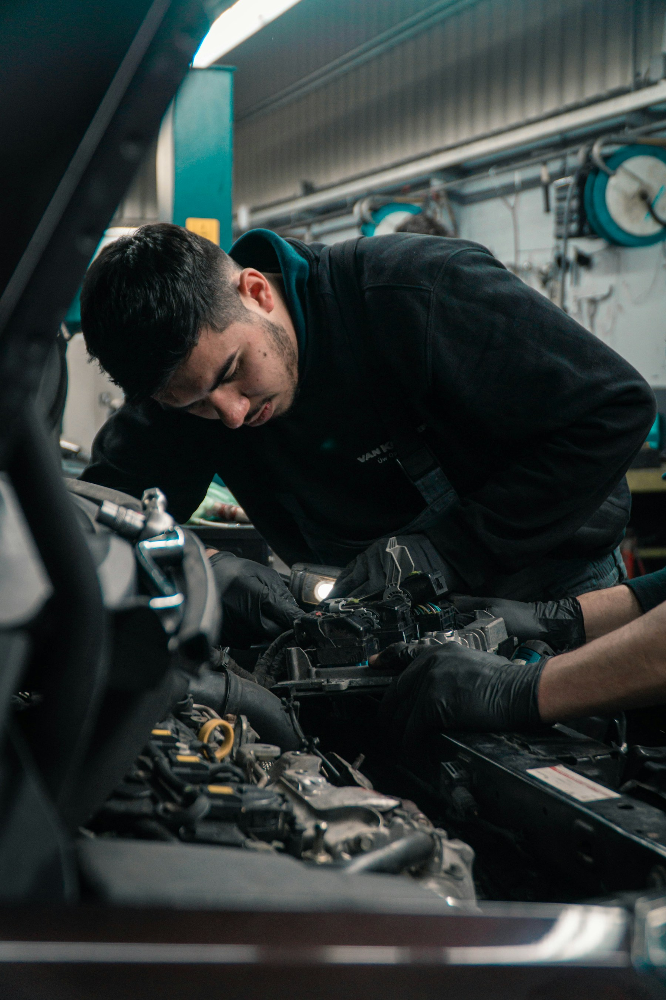

Onsite service
Mobile Mechanic Service
Diagnostics, routine maintenance, no-start help, minor repairs, and repair planning at your location.
Open page →Services
Choose the service closest to what your vehicle needs, then call or text with your location and vehicle details.
Diagnostics, routine maintenance, no-start help, minor repairs, and repair planning at your location.
Open page →
Brake pads, rotors, fluid concerns, noise checks, vibration diagnosis, and safety-focused recommendations.
Open page →Advanced diagnostics help identify the right repair path before parts are thrown at the problem.
Open page →
Oil and lube, tune-ups, belts, hoses, fluids, and preventative maintenance without rearranging your day around a shop visit.
Open page →
Onsite Auto can support vans, work trucks, and company vehicles with scheduled maintenance, diagnostics, and repair coordination.
Open page →A pre-buy inspection helps spot maintenance concerns, obvious safety issues, and negotiation points before money changes hands.
Open page →